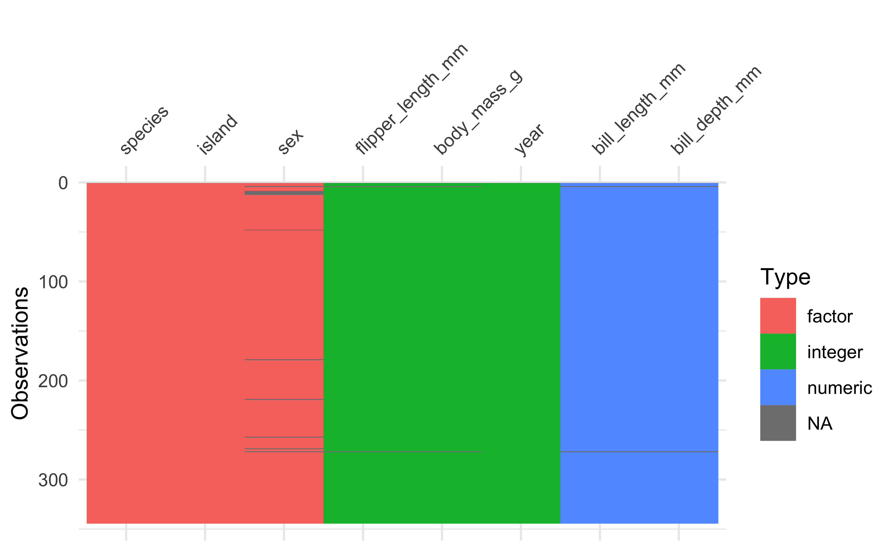
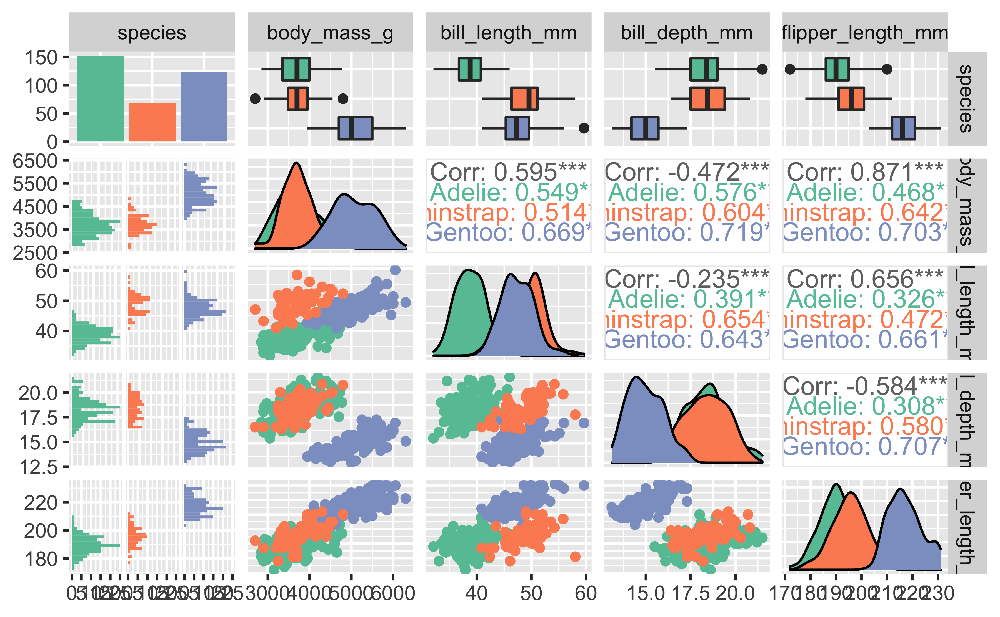
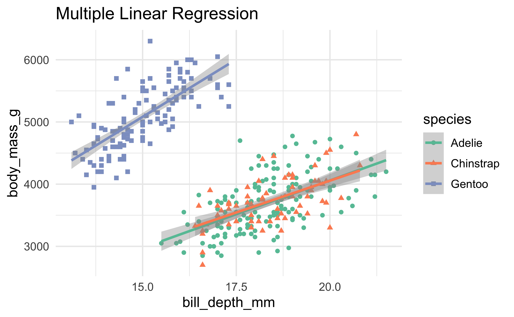
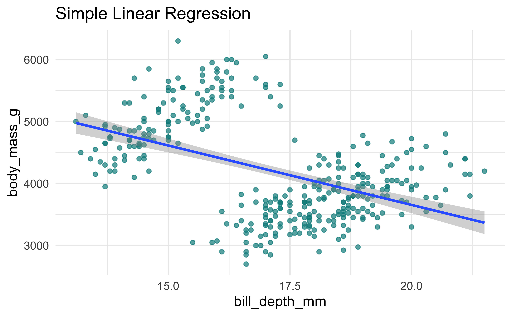

Code
library(tidyverse)
library(palmerpenguins)Let’s explore linear regression models. The data I will be using is penguins dataset from palmerpenguins package [1].
library(tidyverse)
library(palmerpenguins)Let’s see an overview of the data by visualizing the column names, types, and missing values.
visdat::vis_dat(penguins)
Here is the first few rows of the data.
head(penguins)| species | island | bill_length_mm | bill_depth_mm | flipper_length_mm | body_mass_g | sex | year |
|---|---|---|---|---|---|---|---|
| Adelie | Torgersen | 39.1 | 18.7 | 181 | 3750 | male | 2007 |
| Adelie | Torgersen | 39.5 | 17.4 | 186 | 3800 | female | 2007 |
| Adelie | Torgersen | 40.3 | 18.0 | 195 | 3250 | female | 2007 |
| Adelie | Torgersen | NA | NA | NA | NA | NA | 2007 |
| Adelie | Torgersen | 36.7 | 19.3 | 193 | 3450 | female | 2007 |
| Adelie | Torgersen | 39.3 | 20.6 | 190 | 3650 | male | 2007 |
For quick overview GGally::ggpairs() can show relationship among penguin species and other numeric variables.
penguins %>%
select(species, body_mass_g, ends_with("_mm")) %>%
GGally::ggpairs(aes(color = species)) +
scale_fill_brewer(palette = "Set2") +
scale_color_brewer(palette = "Set2")
Today, I will focus on predicting body_mass_g of the penguins using linear regression models.
Predict body_mass_g using 1 predictor bill_depth_mm.
let’s fit the simple linear regression model. The outcome variable is body_mass_g and the predictor is bill_depth_mm.
Now, Let’s visualize a scatter plot between these 2 variables.
p1 <- penguins %>%
ggplot(aes(bill_depth_mm, body_mass_g)) +
geom_point(color = "cyan4", alpha = 0.7) +
geom_smooth(method = "lm") +
labs(title = "Simple Linear Regression")
p1
Figure 1 show relationships between body_mass_g and bill_depth_mm. Looking at these points, I can see 2 clouds of points: the upper-left group and the lower-right group.
By looking at the line, something strange is happening here, the line connects 2 clouds of points together with downward sloping; an increase in bill_depth_mm corresponding to a decrease of body_mass_g !
It’s a little weird right ?
I will explore this further, but for now let’s assume that it is OK and continue to fit the model.
I will use lm() function to fit the model, then the model’s summary will be shown by summary().
pen_lm_fit_simple <- lm(body_mass_g ~ bill_depth_mm, data = penguins)
summary(pen_lm_fit_simple)
#>
#> Call:
#> lm(formula = body_mass_g ~ bill_depth_mm, data = penguins)
#>
#> Residuals:
#> Min 1Q Median 3Q Max
#> -1607.38 -510.10 -66.96 462.43 1819.28
#>
#> Coefficients:
#> Estimate Std. Error t value Pr(>|t|)
#> (Intercept) 7488.65 335.22 22.34 <2e-16 ***
#> bill_depth_mm -191.64 19.42 -9.87 <2e-16 ***
#> ---
#> Signif. codes: 0 '***' 0.001 '**' 0.01 '*' 0.05 '.' 0.1 ' ' 1
#>
#> Residual standard error: 708.1 on 340 degrees of freedom
#> (2 observations deleted due to missingness)
#> Multiple R-squared: 0.2227, Adjusted R-squared: 0.2204
#> F-statistic: 97.41 on 1 and 340 DF, p-value: < 2.2e-16broom::glance() will return model’s summary in a one-row tibble which can be easier to manipulate it later.
broom::glance(pen_lm_fit_simple)| r.squared | adj.r.squared | sigma | statistic | p.value | df | logLik | AIC | BIC | deviance | df.residual | nobs |
|---|---|---|---|---|---|---|---|---|---|---|---|
| 0.2227044 | 0.2204182 | 708.0772 | 97.414 | 0 | 1 | -2728.667 | 5463.334 | 5474.839 | 170466918 | 340 | 342 |
The linear regression model of body_mass_g on bill_depth_mm has an adjusted R2 = 0.22, p-value < 0.001; meaning that this model is statistically significant and 22% of variation in body_mass_g can be explained by bill_depth_mm.
Automated Report
report::report(pen_lm_fit_simple) %>% summary() We fitted a linear model to predict body_mass_g with bill_depth_mm. The model’s explanatory power is moderate (R2 = 0.22, adj. R2 = 0.22). The model’s intercept is at 7488.65 (95% CI [6829.29, 8148.01]). Within this model:
The estimated model coefficients can be written as Equation 1.
\[ \widehat{Wt} = 7488.7 - 191.6 \times Bill.Depth \qquad(1)\]
Every 1 mm increases in bill depth corresponds to an estimated decreases of weight by -191.6 kg.
Now, let’s add species to our linear model.
Predict body_mass_g using 2 predictors: bill_depth_mm and species.
Let’s make a scatter plot similar to Figure 1 with colors added to species.
p2 <- penguins %>%
ggplot(aes(bill_depth_mm, body_mass_g, color = species, shape = species)) +
geom_point() +
geom_smooth(method = "lm") +
scale_color_brewer(palette = "Set2") +
labs(title = "Multiple Linear Regression")
p2
In Figure 2, with color = species added to the plot, we can see that the upper-left cloud of points are Gentoo species and the lower-right are Adelie and Chinstrap. The interesting thing here is the 3 regression lines that fitted to each species has an upward slope which is contrast to the Figure 1.
You can see the plots of simple vs multiple linear regression side-by-side here.


Next, The model will be fitted once again with an outcome variable: body_mass_g , and predictors: bill_depth_mm and species. I will use broom::tidy() to show model coefficients.
pen_lm_fit_multi <- lm(body_mass_g ~ bill_depth_mm + species, data = penguins)
broom::tidy(pen_lm_fit_multi)| term | estimate | std.error | statistic | p.value |
|---|---|---|---|---|
| (Intercept) | -1007.28112 | 323.56097 | -3.1131107 | 0.0020093 |
| bill_depth_mm | 256.61461 | 17.56282 | 14.6112380 | 0.0000000 |
| speciesChinstrap | 13.37732 | 52.94712 | 0.2526544 | 0.8006889 |
| speciesGentoo | 2238.66811 | 73.68183 | 30.3829071 | 0.0000000 |
broom::glance() shows model overview as one-row data frame.
broom::glance(pen_lm_fit_multi)| r.squared | adj.r.squared | sigma | statistic | p.value | df | logLik | AIC | BIC | deviance | df.residual | nobs |
|---|---|---|---|---|---|---|---|---|---|---|---|
| 0.7975462 | 0.7957493 | 362.4362 | 443.839 | 0 | 3 | -2498.619 | 5007.239 | 5026.413 | 44399670 | 338 | 342 |
The linear regression model of body_mass_g on bill_depth_mm and species has an adjusted R2 = 0.8, p-value < 0.001; meaning that this model is statistically significant and 22% of variation in body_mass_g can be explained by bill_depth_mm and species.
Automated Report
report::report(pen_lm_fit_multi) %>% summary() We fitted a linear model to predict body_mass_g with bill_depth_mm and species. The model’s explanatory power is substantial (R2 = 0.80, adj. R2 = 0.80). The model’s intercept is at -1007.28 (95% CI [-1643.73, -370.83]). Within this model:
The estimated model coefficients can be written as Equation 2.
\[ \begin{aligned} \widehat{Wt} = &- 1007.3 \\ &+ 256.6 \times Bill.Depth \\ &+ 13.4 \times SP_{Chinstrap} \\ &+ 2238.7 \times SP_{Gentoo} \end{aligned} \qquad(2)\]
I use the notation \(Var_{LV}\) to represent indicator variables for when the categorical variable takes a particular value. For example \(SP_{Chinstrap}\) would take a value of 1 if the species is “Chinstrap”, and it would take a value of 0 otherwise. The same logic also applies to “Gentoo”.
We have seen from the Figure 2 that the models can be visualized as 3 regression lines for each species. Now we shall see whether coefficient of the model agree with the plot.
The slope of the line is the coefficient of \(Bill.Depth\) as given by Equation 2, It means that the slope of each 3 lines is the same (= 256.6).
For every 1 mm increases in bill_depth_mm in any given species corresponds to an estimated increases in body_mass_g of 256.6.
In this multiple regression example, It can be seen that the coefficient of bill_depth_mm after adjusting for species (256.6) is not the same as before when it is the only predictor (-191.6).
We can estimate differences in body_mass_g among species when taking bill_depth_mm into account using Equation 2. The “Adelie” species is considered as baseline.
For example, using \(SP_{Gentoo}\) coefficient, we could say that “Gentoo” has an estimated weight of 2238.7 (g) more than “Adelie” for any given bill_depth_mm. Note that the effect of “Chinstrap” is non-significant as we can already see in the Figure 2 that Chinstrap’s line and Adelie’s line are, in fact, very close.